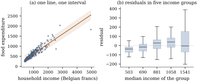

45.1 Why model more than the mean
A fitted regression is usually reported as a curve
with a band around it. The curve estimates
45.1.1. What the mean model promises
Take the model of Chapter
5 in its strongest form:
Let
Proof. Write
Let
(a) Location model. If
(b) Location-scale model. If
so
(c) Beyond scale. In (b) the standardized response
Proof. Parts (a) and (b) are Lemma 45.1.1
applied conditionally on
In plain words: quoting one residual standard deviation asserts that the poorest household’s food budget is as predictable as the richest one’s, and that a covariate moving the median moves the tenth and ninetieth percentiles by exactly the same amount. Those are claims about the world, rarely examined and often false.
45.1.2. Heteroscedasticity is a finding
Chapter
21 treated non-constant variance as a problem to be
managed: test for it (Theorem 21.2.2),
fix the standard errors (Definition 21.4.1),
or reweight (Theorem 21.3.1).
All three treat
Engel’s 1857 survey of
The consequence for a prediction interval is
immediate. The nominal
Shape moves too. The quartile coefficient of
skewness,

import numpy as np
import statsmodels.api as sm
from scipy import stats
data = sm.datasets.engel.load_pandas().data
income = data["income"].to_numpy()
food = data["foodexp"].to_numpy()
n = len(income)
X = np.column_stack([np.ones(n), income])
beta, *_ = np.linalg.lstsq(X, food, rcond=None)
resid = food - X @ beta
sigma = np.sqrt(resid @ resid / (n - 2)) # one number for every household
# a 95% prediction interval from the homoscedastic normal model
t = stats.t.ppf(0.975, n - 2)
lev = np.einsum("ij,jk,ik->i", X, np.linalg.inv(X.T @ X), X)
half = t * sigma * np.sqrt(1 + lev)
inside = (food >= X @ beta - half) & (food <= X @ beta + half)
# split the households into income thirds and look at the spread in each
edges = np.quantile(income, [1 / 3, 2 / 3])
third = np.digitize(income, edges)
spread = [resid[third == k].std(ddof=1) for k in range(3)]
covered = [inside[third == k].mean() for k in range(3)]
print(f"residual sd by income third: {spread[0]:.1f}, {spread[1]:.1f}, {spread[2]:.1f}")
print(f"inside the 95% band: {covered[0]:.3f}, {covered[1]:.3f}, {covered[2]:.3f}")45.1.3. Questions that need a distribution
Some questions cannot even be stated in terms of a conditional mean. What share of a poor household’s income goes on food? asks for a low quantile, because policy is written about the vulnerable. What is the tenth percentile of birth weight at this gestational age? asks for a paediatric reference chart, a grid of conditional quantiles. How much capital must be held against this portfolio? asks for a value at risk, a conditional quantile and not a multiple of a conditional standard deviation unless the shape is known. Has inequality in wages changed, or only the average wage? compares quantile curves at different levels, which is where quantile regression entered economics.
45.1.4. Three routes
The three sections that follow take three strategies, in increasing order of what they assume: estimate each quantile separately by an asymmetrically weighted absolute deviation; estimate each expectile separately by an asymmetrically weighted squared deviation, buying a differentiable loss at the price of a fitted quantity that is harder to describe; or model the whole conditional law by giving every parameter of a parametric family its own structured additive predictor. A fourth route was taken long ago — transform the response until a homoscedastic model fits, as in Definition 22.2.1 — but one power must serve the whole design, and Section 22.5 recorded what that costs when the answer is wanted on the original scale. Because the routes answer different questions, they are compared in Section 45.6 by which produces the better predictive distribution.
45.1.5. Exercises
A. Check your understanding
In a homoscedastic linear model with normal errors,
by how much does the
Solution. The difference is
B. Practice
Let
Solution. By Lemma 45.1.1 with
In Example (Engel’s budgets, one more time)
the homoscedastic
C. Going deeper
Proposition 45.1.2(c)
says that a location-scale model freezes the shape. The
converse fails, and badly: freezing the conditional mean
and variance leaves the shape free. Let
(a) Show that
(b) Show that
(c) Show that
(d) Show that the interval
(e) Say which part of Proposition 45.1.2 this complements and why it contradicts none of them.
Solution.
(a) Write
(b)
(c) The two atoms satisfy
(d) Both atoms lie in
(e) It complements part (c), which shows that a location-scale family has a shape free of
The fourth route mentioned at the end of the section is to transform the response until a location-scale model fits. Here it provably cannot work.
(a) Suppose
(b) Show that if
(c) Deduce that for the family of Exercise (C1) no strictly increasing
(d) What is left, and where does the chapter go next?
Solution.
(a) Applying Lemma 45.1.1 conditionally on
(b)
(c) A strictly increasing
(d) What is left is to stop insisting that one curve with one noise distribution describes the conditional law. Either estimate each conditional quantile on its own terms, as Section 45.2 does with the check loss, or give every parameter of a distribution its own predictor, as Definition 45.5.1 does. The family here is an extreme case built to make the point; the Engel data of Example (Engel’s budgets, one more time) make a milder version of it, with a spread that triples and a skewness that changes sign across the design.